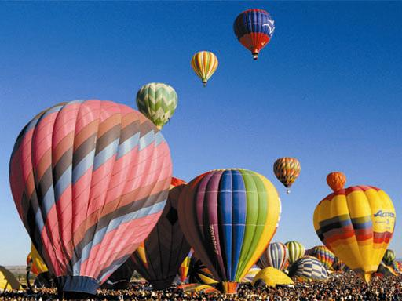
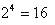
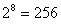
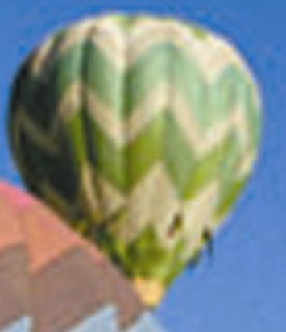

1.2.5.1 Растровая графика
Растровую графику применяют при разработке электронных (мультимедийных) и полиграфических изданий. В последнее время для ввода растровых изображений в компьютер нашли широкое применение цифровые фото- и видеокамеры. Соответственно, большинство графических редакторов, предназначенных для работы с растровыми иллюстрациями, ориентировано не столько на создание изображений, сколько на их обработку. Любое изображение в газете, на фотографии или на холсте художника можно представить себе как совокупность точек, каждая из кoторых окрашена в тот или иной цвет. Любое изображение на экране монитора также является совокупность точек (пикселов), каждая из которых окрашена в какой-либо цвет. Все компьютерные изображения являются цифровыми, то есть каждый пиксел описывается неким целым числом, представляющим цвет точки.

Рисунок 1 - Пример растровой иллюстрации
Количество цветов, которые может воспроизводить видеоадаптер, определяется количеством бит, отводимых в видеопамяти компьютера для описания одной точки. Например, 4 бита позволяют воспроизводить  цветов, 8 бит - цветов и т. д.
Основным элементом растрового изображения является точка. Если изображение экранное, эта точка называется пикселом. Пиксел - сокращение от английских слов "picture element" ("элемент изображения"). В зависимости от того, на какое графическое разрешение экрана настроена операционная система компьютера, на экране могут размещаться изображения, имеющие 640x480, 800x600, 1024x768 и более пикселов. С размером изображения непосредственно связано его разрешение. Этот параметр измеряется в точках на дюйм (dots per inch - dpi). У монитора с диагональю 15 дюймов размер изображения на экране составляет примерно 28x21 см. Зная, что в одном дюйме 25,4 мм, можно рассчитать, что при работе монитора в режиме 800x600 пикселов разрешение экранного изооражения равно 720 dpi.
При печати разрешение должно быть намного выше. Полиграфическая печать полноцветного изображения требует разрешения 200-300 dpi. Стандартный фотоснимок размером 10X15 см должен содержать примерно 1000X1500 пикселов и будет иметь 1,5 млн точек, а если изображение цветное и на кодирование каждой точки использованы три байта, то цветной фотографии размером 10x15 см соответствует массив данных размером свыше 4 Мбайт.
Все точки растрового изображения запоминаются в специальном файле, и поэтому основной проблемой при использовании растровых изображений является большой объем данных. Для активных работ с крупными иллюстрациями типа журнальной полосы требуются компьютеры с исключительно большими размерами оперативной памяти (128 Мбайт и более).
Второй недостаток растровых изображений связан с невозможностью их увеличения для рассмотрения деталей. Поскольку изображение состоит из точек, увеличение изображения приводит только к тому, что эти точки становятся крупнее.

Рисунок 2 - Увеличенное растровое изображение
Никаких дополнительных деталей при увеличении растрового изображения рассмотреть не удается. Более того, увеличение точек растра визуально искажает иллюстрацию и делает ее грубой (рис. 2), а при уменьшении - резко снижается качество деталей (за счет потери точек).
Тем не менее при соответствующей технике растр позволяет получить изображение высочайшего качества. Поэтому растровые рисунки широко применяются в художественной графике и в задачах, где не предъявляется особых требований к качеству масштабирования изображения.
Растровые изображения создаются средствами специальных программ с помощью инструментов, имеющих аналоги в ручной живописи (кисти, карандаш, распылитель). Растровые изображения создает и сканер, представляющий рисунок набором оцифрованных точек. Простейший пример приложения для обработки растровых рисунков - стандартный графический редактор Microsoft Paint. В профессиональной графике используются мощные приложения, например CorelPhoto, Adobe Photoshop.